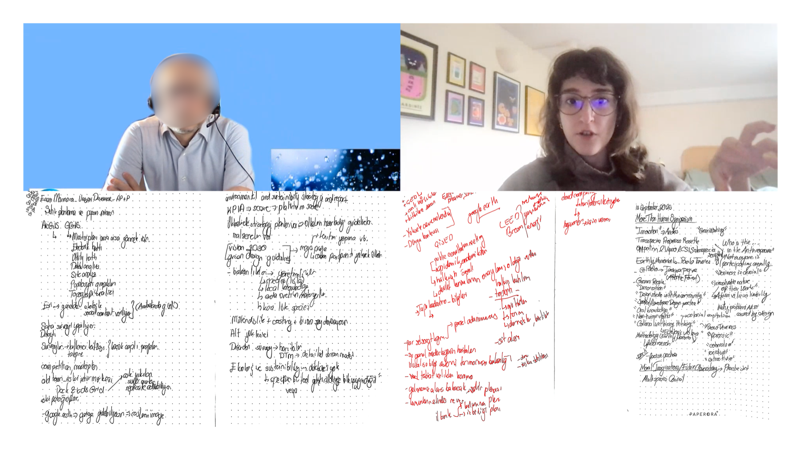
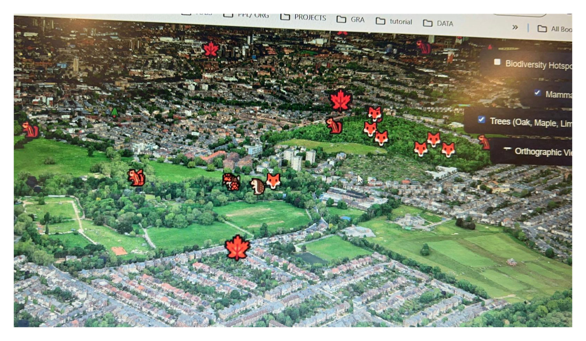

Kin'o'polis is a speculative cartographic tool that is designed for everyone from urban designers and architects to policy makers and local communities. The project reimagines London as a multispecies city by integrating urban datasets with ecological information. Besides visualizing this data, the tool uses it to model alternative city futures for more than human species inhabiting cities.
The tool brings together spatial data with real-time user input (citizen feedback) to produce ecological urban strategies represented as adaptive 3D models, emerging from the zones of development and re-developement. This generated layer of the cartographic tool, reveals how neighbourhoods could evolve through more sustainable, inclusive and multispecies design practices. It offers a new lens for citizens, authorities and designers to reimagine their surroundings.
I defined two types of users for my project. The first user represents, city planners, urban and landscape architects and architects. I defined their needs and objectives to be, site analysis, data gathering, information gathering, access to ecological, biological and scientific information such as biotopes, trophic levels species habitats, policy records and environmental reports.
Environmental engineers, architectural and urban designers are often required to overlay multiple environmental data layers from different platforms and institutions. Furthermore, the stakeholder feedback is handled in different platforms. This shows the need for a combined platform that brings together multiple data in one medium, for the flow of use and ease of workload. Therefore, the tool should combine these information in a united interface. Furthermore, including functions such as uploading design proposals for collaboration and feedback and comparing the design solutions with the algorithmically proposed solutions could be another ease for this user group.
The second type of user represents the local neighbors, businesses, community groups. Their aim of using the tool were defined as, inputting information and on observed species, giving feedback and suggestions on the enhancement of neighborhood (parks, recreational areas), reporting environmental damages or risks, and get informed about their local species, ecological environment, and developmental proposals (see Table 2).

The more-than-human map is planned to be realized for digital mediums which allows variety of interactions, enables filtering of displayed information and changes in point of view. Every Being's City is decided to be accessible as a browser application since accessibility is central for participatory mapping and broader engagement. The map can be explored in 2D, orthographic, and fully navigable 3D views, allowing multiple perspectives and interpretations, a more organic and objective experience. This decision was important, supporting the more-than-human thinking, allowing the users see ecological relationships beyond conventional top-down, static maps. It includes toggleable data layers, including a layer for citizen input and a layer visualizing the generated multispecies city (see Figure 17). It also includes a feedback form for local communities, to input suggestions and observations.

Before the software development and coding, three-dimensional models were built in Blender. The aim of these models to serve as conceptual tools for communicating the idea behind the project while conducting the interviews. They were shown to the interviewees together with the sketches, to demonstrate the aim, interactions and visual language of the tool
Interviews were conducted with professionals from relative disciplines (see Figure 19), including environmental engineering, urban planning and landscape architecture, sustainability consultancy, survey engineering, and computational design. A base questionnaire was prepared (see Appendix I), however, questions were slightly adapted in each interview to match the expertise of the interviewee. The participants were asked about detailed information on their field and professional role, their background and/ or future expectations in working with community participation and nature-inclusive design, as well as project specific questions and feedback. The information and insights gathered from these interviews, guided the strategy for the map tool’s creation.

QGIS was used or filtering, organization, data and format conversions, attribute calculations, and preprocessing of geospatial data before visualization. Unnecessary attribute fields from large datasets were removed, complex and large files were simplified, the data was filtered to relative geographic extents, datasets were prepared for interactive web-based maps. It was used for format conversion, such as JSON to GeoJSON and GeoTIFF to GeoJSON. Additionally, QGIS was used to merge data layers, and to perform calculations. For instance, noise pollution data were available as separate layers for rail and road. These layers were combined and summed up to produce an overall noise pollution layer

The first project prototype was built using React+ Cesium with Google Map Tiles as the base map. This prototype covered the entire London and visualized, the biodiversity hotspots, the most frequently observed mammals and tree species, environmental risks against urban planning and ecological habitats and future city planning opportunities (see The Data for further information).
However, this prototype had performance issues, and it was visually complicated since many colors and textures were overlapped in the background and foreground (see Figure 21). Additionally, since Cesium hosts the geospatial information three-dimensional globe rather than a two-dimensional map, the data had to be calculated and situated in a large-scale 3D environment continuously, which slowed down the tool. The high level of details in Google Map Tiles caused heavy rendering, thus, causing system freezes.

I decided to develop the map tool using Three.js with Yandex Maps JavaScript API (Yandex, 2025). However, due to an issue with accessing the API key of Yandex Maps, Mapbox GL JS (Mapbox, 2025) was used instead for base map and 3D buildings. Mapbox’s ‘mapbox/dark-v11’ style was used, since it had a plain interface, and allowed other data layers to be legible. The transition to Mapbox simplified the visual environment, allowing the legibility and communication of ecological relationships.
London Biodiversity Action Plan Priority Species List (GLA, 2008) and Species Action Plans (GIGL, 2025), were studied in order to select which species to focus on. Since bats and their habitats were under threat and there was already an action plan on their conservation, they were the ideal species to start with. This choice allowed the research to be established on more concrete choices of visualized data such as threats and opportunities and specific design decisions at the generative layer. Reviewing biodiversity action plans, allowed the generative rules to be based on established, existing strategies, ensuring speculative outcomes to remain more realistic.
Resources on natural environment management solutions (The Forestry Commission, 2009) and landscape and urban planning solutions (Gunnell et al., 2012) were found. Further information on bats’ habitats, ecological needs (Natural England, 2010) and on the key threats (Jones, 2000) were collected. The research and collection of visualized geospatial data and the generative decisions followed these informations.
Similar to the first prototype, the second prototype also features toggleable layers of geospatial information. The first layer visualizes the species distribution, with their scientific names at the recorded sighting locations. In this prototype, the focus is only on bats. The second layer depicts habitat types across South-East London which can be filtered by category. The subsequent layers show threats to bat habitats which are noise and light pollution, as opportunities such as habitat expansion zones and fragmentation action zones.
A community engagement layer where public feedback related to wildlife, habitat protection and expansion of sustainable environments can be viewed and submitted through a form. Finally, the generative layer, processes the displayed data in order to propose an urban design solution through three-dimensional models, and translates the abstract data into speculative visualization (see Figure 22).